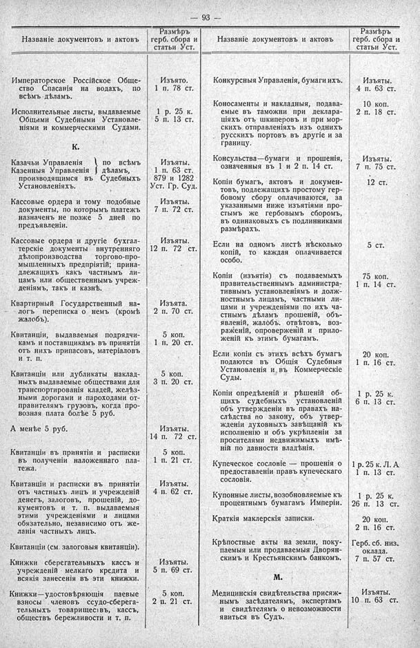

Лист источника 139
Скан

Распознанный текст
-- 93 --
Названіе документовъ и актовъ Размѣръ герб. сбора и статьи Уст. Названіе документовъ и актовъ Размѣръ герб. сбора и статьи Уст.
Императорское Россійское Обще- ство Спасанія на водахъ, по всѣмъ дѣламъ. Изъято. 1 п. 78 ст. Конкурсныя Управленія, бумаги ихъ. Изъяты. 4 п. 63 ст.
Исполнительные листы, выдаваемые Общими Судебными Установле- ніями и коммерческими Судами. 1 р. 25 к. 5 п. 13 ст. Коносаменты и накладныя, подава- емые въ таможни при деклара- ціяхъ отъ шкиперовъ и при мор- скихъ отправленіяхъ изъ однихъ русскихъ портовъ въ другіе и за границу. 10 коп. 2 п. 18 ст.
К. Казачьи Управленія по всѣмъ Казенныя Управленія дѣламъ, производящимся въ Судебныхъ Установленіяхъ. Изъяты. 1 п. 63 ст. 879 и 1282 Уст. Гр. Суд. Консульства—бумаги и прошенія, означенныя въ 1 и 2 п. 14 ст. Изъяты. 7 п. 75 ст.
Кассовые ордера и тому подобные документы, по которымъ платежъ назначенъ не позже 5 дней по предъявленіи. Изъяты. 7 п. 72 ст. Копіи бумагъ, актовъ и докумен- товъ, подлежащихъ простому гер- бовому сбору оплачиваются, за указанными ниже изъятіями про- стымъ же гербовымъ сборомъ, въ одинаковыхъ съ подлинниками размѣрахъ. 12 ст.
Кассовые ордера и другіе бухгал- терскіе документы внутренняго дѣлопроизводства торгово-про- мышленныхъ предпріятій; прина- длежащихъ какъ частнымъ ли- цамъ или общественнымъ учреж- деніямъ, такъ и казнѣ. Изъяты. 12 п. 72 ст. Если на одномъ листѣ нѣсколько копій, то каждая оплачивается особо. 5 ст.
Квартирный Государственный на- логъ переписка о немъ (кромѣ жалобъ). Изъята. 2 п. 70 ст. Копіи (изъятія) съ подаваемыхъ правительственнымъ администра- тивнымъ установленіямъ и долж- ностнымъ лицамъ, частными ли- цами и учрежденіями по ихъ ча- стнымъ дѣламъ прошеній, объ- явленій, жалобъ, отвѣтовъ, воз- раженій, опроверженій и прило- женій къ этимъ бумагамъ. 75 коп. 1 п. 14 ст.
Квитанціи, выдаваемыя подрядчи- камъ и поставщикамъ въ принятіи отъ нихъ припасовъ, матеріаловъ и т. п. 5 коп. 1 п. 20 ст. Если копіи съ этихъ всѣхъ бумагъ подаются въ Общія Судебныя Установленія и въ Коммерческіе Суды. 20 коп. 1 п. 16 ст.
Квитанціи или дубликаты наклад- ныхъ выдаваемые обществами для транспортированія кладей, желѣз- ными дорогами и пароходами от- правителямъ грузовъ, когда про- возная плата болѣе 5 руб. 5 коп. 3 п. 20 ст. Копіи опредѣленій и рѣшеній об- щихъ судебныхъ установленій объ утвержденіи въ правахъ на- слѣдства по закону, объ утвер- жденіи духовныхъ завѣщаній къ исполненію и объ укрѣпленіи за просителями недвижимыхъ имѣ- ній по давности владѣнія. 1 р. 25 к. 6 п. 13 ст.
А менѣе 5 руб. Изъяты. 14 п. 72 ст. Купеческое сословіе — прошенія о предоставленіи правъ купеческаго сословія. 1 р. 25 к. Л. А 1 п. 13 ст.
Квитанціи въ принятіи и расписки въ полученіи наложеннаго пла- тежа. 5 коп. 1 п. 21 ст. Купонные листы, возобновляемые къ процентнымъ бумагамъ Имперіи. 1 р. 25 к. 26 п. 13 ст.
Квитанціи и расписки въ принятіи отъ частныхъ лицъ и учрежденій денегъ, залоговъ, прошеній, до- кументовъ и т. п. выдаваемыя этими учрежденіями и лицами обязательно, независимо отъ же- ланія частныхъ лицъ. Изъяты. 4 п. 62 ст. Краткія маклерскія записки. 20 коп. 2 п. 16 ст.
Квитанціи (см. залоговыя квитанціи). Крѣпостные акты на земли, поку- паемыя или продаваемыя Дворян- скимъ и Крестьянскимъ банкомъ. Герб. сб. низ. оклада. 7 п. 57 ст.
Книжки сберегательныхъ кассъ и учрежденій мелкаго кредита и всякія занесенія въ эти книжки. Изъяты. 5 п. 69 ст. М.
Книжки—удостовѣряющія паевые взносы членовъ ссудо-сберега- тельныхъ товариществъ, кассъ, обществъ бережливости и т. п. 5 коп. 2 п. 21 ст. Медицинскія свидѣтельства присяж- нымъ засѣдателямъ, экспертамъ и свидѣтелямъ о невозможности явиться въ Судъ. Изъяты. 10 п. 63 ст.